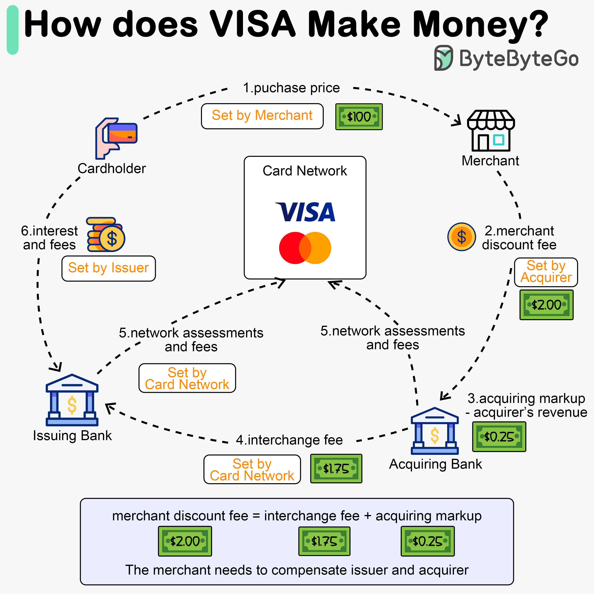

Why is the credit card called “the most profitable product in banks”? How does VISA/Mastercard make money?
The diagram above shows the economics of the credit card payment flow.
Step 1. The cardholder pays a merchant $100 to buy a product.
Step 2. The merchant benefits from the use of the credit card with higher sales volume and needs to compensate the issuer and the card network for providing the payment service. The acquiring bank sets a fee with the merchant, called the “merchant discount fee.”
Step 3 - 4. The acquiring bank keeps $0.25 as the acquiring markup, and $1.75 is paid to the issuing bank as the interchange fee. The merchant discount fee should cover the interchange fee. The interchange fee is set by the card network because it is less efficient for each issuing bank to negotiate fees with each merchant.
Step 5. The card network sets up the network assessments and fees with each bank, which pays the card network for its services every month. For example, VISA charges a 0.11% assessment, plus a $0.0195 usage fee, for every swipe.
Step 6. The cardholder pays the issuing bank for its services.
The issuer pays the merchant even if the cardholder fails to pay the issuer.
The issuer pays the merchant before the cardholder pays the issuer.
The issuer has other operating costs, including managing customer accounts, providing statements, fraud detection, risk management, clearing & settlement, etc.
Over to you: Does the card network charge the same interchange fee for big merchants as for small merchants?